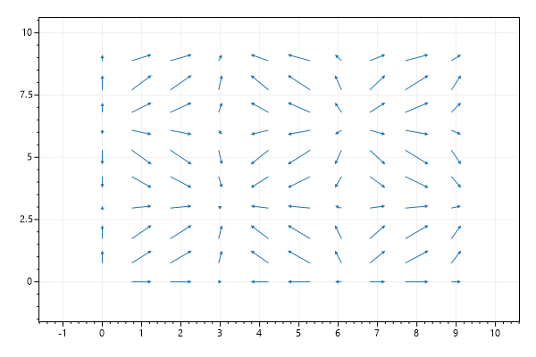
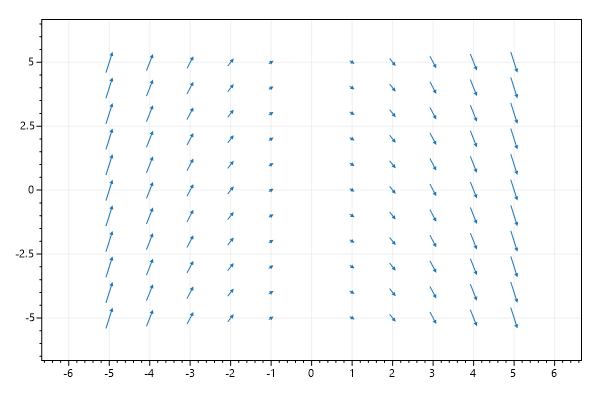
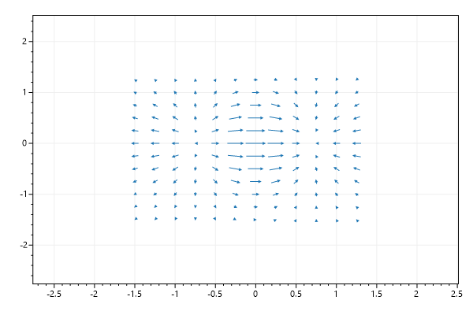

ScottPlot Cookbook: Plottable - Vector Field
⚠️ Documentation is version-specific: This page was generated forScottPlot 4.1.4-beta
Additional documentation and more version-specific cookbooks are on the ScottPlot Website
Quickstart
A vector field can be useful to show data explained by differential equationsvar plt = new ScottPlot.Plot(600, 400);
double[] xPositions = DataGen.Range(0, 10);
double[] yPositions = DataGen.Range(0, 10);
Vector2[,] vectors = new Vector2[xPositions.Length, yPositions.Length];
for (int x = 0; x < xPositions.Length; x++)
for (int y = 0; y < yPositions.Length; y++)
vectors[x, y] = new Vector2(
x: Math.Sin(xPositions[x]),
y: Math.Sin(yPositions[y]));
plt.AddVectorField(vectors, xPositions, yPositions);
plt.SaveFig("vectorField_quickstart.png");

Angle and Magnitude
This example demonstrates how to define vectors according to a given angle and magnitude.var plt = new ScottPlot.Plot(600, 400);
double[] xs = DataGen.Range(-5, 6);
double[] ys = DataGen.Range(-5, 6);
Vector2[,] vectors = new Vector2[xs.Length, ys.Length];
for (int i = 0; i < xs.Length; i++)
{
for (int j = 0; j < ys.Length; j++)
{
double slope = -xs[i];
double magnitude = Math.Abs(xs[i]);
double angle = Math.Atan(slope);
vectors[i, j] = new Vector2(Math.Cos(angle) * magnitude, Math.Sin(angle) * magnitude);
}
}
plt.AddVectorField(vectors, xs, ys);
plt.SaveFig("vectorField_angleMag.png");

Custom Colormap
A colormap can be supplied to color arrows according to their magnitudevar plt = new ScottPlot.Plot(600, 400);
double[] xs = DataGen.Range(-5, 5, .5);
double[] ys = DataGen.Range(-5, 5, .5);
Vector2[,] vectors = new Vector2[xs.Length, ys.Length];
double r = 0.5;
for (int i = 0; i < xs.Length; i++)
{
for (int j = 0; j < ys.Length; j++)
{
double x = ys[j];
double y = -9.81 / r * Math.Sin(xs[i]);
vectors[i, j] = new Vector2(x, y);
}
}
plt.AddVectorField(vectors, xs, ys, colormap: Drawing.Colormap.Turbo);
plt.XLabel("θ");
plt.YLabel("dθ/dt");
plt.SaveFig("vectorField_colormap.png");

Custom Scale Factor
A custom scale factor can adjust the length of the arrows.var plt = new ScottPlot.Plot(600, 400);
double[] xs = DataGen.Range(-1.5, 1.5, .25);
double[] ys = DataGen.Range(-1.5, 1.5, .25);
Vector2[,] vectors = new Vector2[xs.Length, ys.Length];
for (int i = 0; i < xs.Length; i++)
{
for (int j = 0; j < ys.Length; j++)
{
double x = xs[i];
double y = ys[j];
var e = Math.Exp(-x * x - y * y);
var dx = (1 - 2 * x * x) * e;
var dy = -2 * x * y * e;
vectors[i, j] = new Vector2(dx, dy);
}
}
plt.AddVectorField(vectors, xs, ys, scaleFactor: 0.3);
plt.SaveFig("vectorField_scaleFactor.png");
